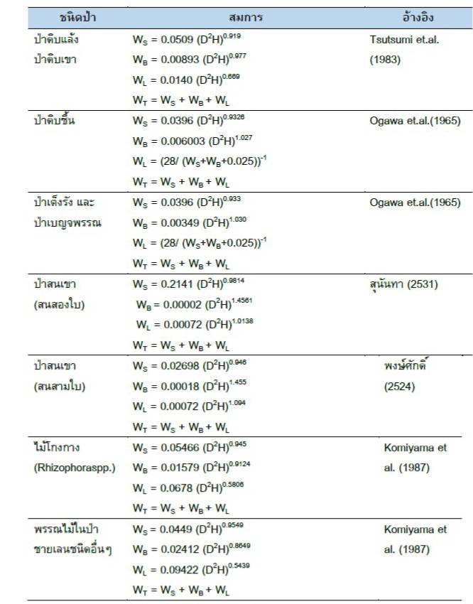

โครงการนี้มีเป้าหมายเพื่อประเมินและส่งเสริมการกักเก็บคาร์บอนในต้นไม้บริเวณมหาวิทยาลัยสงขลานครินทร์ วิทยาเขตภูเก็ต เพื่อช่วยลดการเปลี่ยนแปลงสภาพภูมิอากาศและส่งเสริมความยั่งยืนของสิ่งแวดล้อม
ในการดำเนินการศึกษานี้ ผู้จัดทำได้ทำการสำรวจและเก็บข้อมูลต้นไม้ยืนต้นภายในพื้นที่มหาวิทยาลัยสงขลานครินทร์ วิทยาเขตภูเก็ต โดยได้แบ่งพื้นที่ศึกษาออกเป็น 10 โซนหลัก คือ
หลังจากการลงพื้นที่สำรวจข้อมูลต้นไม้ยืนต้นในแต่ละโซน ข้อมูลที่ได้ถูกนำมาประมาณการปริมาณการกักเก็บคาร์บอน โดยใช้สมการแอลโลเมตรี (Allometric Equation) ตามแนวทางขององค์การบริหารจัดการก๊าซเรือนกระจก (อบก.) เพื่อให้ได้ค่าที่ถูกต้องและน่าเชื่อถือสำหรับการประเมินปริมาณคาร์บอนที่ต้นไม้ในแต่ละโซนสามารถกักเก็บได้
ที่มา: องค์การบริหารจัดการก๊าซเรือนกระจก
สามารถดูผลลัพธ์การกักเก็บคาร์บอนได้ที่ ผลลัพธ์การกักเก็บคาร์บอน
ชื่อ: นางสาวณ กมล งามขำ
หมายเลขโทรศัพท์: 083-6399969
Facebook: Parnpann Na Kamol Ngamkham
Instagram: @mools.exe
อีเมล: pannparn.1725@gmail.com